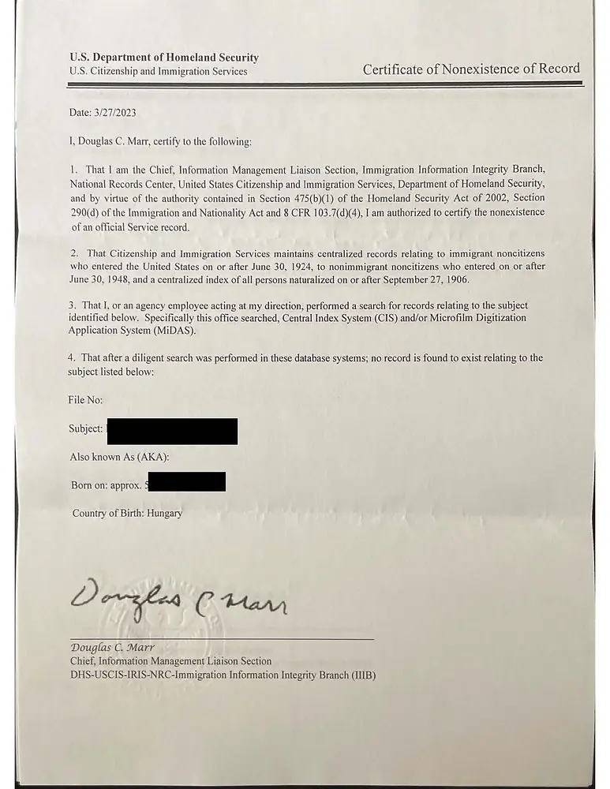

Everything you need to understand Italian citizenship by descent.
Expert articles, guides, and FAQs covering Law 74/2025, Jure Sanguinis eligibility, documents, and the application routes.
Guides
Italian citizenship by descent — guides

Jure Sanguinis
What is Jure Sanguinis? A plain-language guide
The Italian law of "right of blood" — what it means, who it applies to, and how it differs from naturalization. The starting point for every citizenship by descent case.
Read articleGetting Started
How to get started with Italian citizenship by descent
Not sure where to begin? This step-by-step guide explains exactly what to do first — from identifying your Italian ancestor to booking your first consultation.
Read articleDocuments
Documents you'll need for Italian citizenship by descent
A complete checklist of the records required for a Jure Sanguinis application — birth, marriage, death, and naturalization documents — and where to get them.
Read article
Eligibility
Citizenship through grandparents, parents, or great-grandparents
How generational distance affects your eligibility and what route is right for different lineage scenarios — including what changed under Law 74/2025.
Read articleApplication Routes
Applying for Italian citizenship from Italy
Can you apply for Italian citizenship by relocating to Italy? What are the pros, cons, timelines, and requirements for applications made from within Italy?
Read article
FAQ
Italian citizenship by descent — FAQ
Answers to the most common questions about Jure Sanguinis eligibility, the application process, timelines, costs, and what happens after recognition.
Read article2026 Updates
The rules after 2025, explained
Dated, source-linked guides to the questions families are asking now.
Eligibility
What "Exclusively Italian Citizenship" Means
The test most parent and grandparent claims now turn on, with examples for U.S. families.
Read guide
Law Status Tracker
EU Court Case C-816/26 Tracker
Dated timeline of the EU challenge to the 2025 law, and what a ruling could change.
Read guide
Law & Policy
Constitutional Court Judgment 63/2026
What Italy's top court decided about the 2025 law in April 2026.
Read guide
Eligibility
Reacquiring Citizenship by December 31, 2027
For former citizens born in Italy who lost citizenship by August 15, 1992.
Read guide
Families
Registering Children Before May 31, 2029
How Italian parents secure citizenship for minor children born abroad.
Read guide
Consulates
Consulate Centralization in 2029
How a 2026 law moves adult applications from consulates to Rome.
Read guideChoosing Help
How to Choose an Italian Citizenship Service
Questions to ask, red flags, and how provider types compare.
Read guideKnow Your Route
Understand your route options
Whether you're going through a consulate, an Italian court, or a 1948 maternal line case — here's what each route involves and what could affect your eligibility.
Court Route
The Court Route (ATQ): When a Court Case Makes Sense
When counsel may recommend a court action (azione di accertamento), which court hears it, and what to expect — often 1–3 years.
Read articleCourt Route
1948 Cases: Citizenship Through a Female Ancestor
When citizenship passed through a woman before 1948, Italian law at the time caused her to lose citizenship on marriage. Courts have ruled this cannot bar descendants today.
Read articleComparison
Court vs Consulate: Which Route Is Right for You?
A side-by-side comparison of timeline, cost, travel requirements, and eligibility for each route — so you can make an informed decision before you start.
Read articleConsulate Route
Consulate Citizenship Appointment: How to Prepare
What to bring, what to expect, and how to avoid the most common rejection reasons at your Italian consulate citizenship appointment.
Read articleLocation Guide
Italian Citizenship for Americans: Consulates & Process
Italian consulate jurisdictions by US state, how to source USCIS and NARA records, and why many Americans choose the ATQ court route over the consulate.
Read article
Eligibility Risk
The Minor Issue After the 2026 Cassation Ruling
The Court of Cassation's July 2026 ruling changed how Law 555/1912 is applied when an ancestor naturalized while their child was a minor. Who it helps, reconsideration of past refusals, and the 2025 rules.
Read articleU.S. Consulate Guides
New York · Chicago · Los Angeles · San Francisco · Boston · Philadelphia · Miami · Houston · Detroit · Washington, DC
Document Guides
Documents — deep dives
Getting documents right is the most common place applications stall. These guides go further than the checklist.
Documents
Apostille & Translation Requirements: By Route and Country
What an apostille is, which documents require one, court vs consulate translation standards, and country-specific requirements for the US.
Read articleDocuments
Naturalisation Proof: USCIS & NARA Records Explained
Why naturalisation records are critical, how to source them from USCIS and NARA, and what a Certificate of Non-Existence is.
Read article
Document Guide
Certificate of Non-Existence (CONE)
How to prove from U.S. records that an ancestor never naturalized.
Read guideLatest Updates
From the blog
Legal developments, court rulings, and consulate updates — so you always know where things stand.
Legal Update · April 2026
Law 74/2025 One Year On: What We've Learned
How Italy's 2025 law has played out in practice: who it affects, the exclusive-citizenship test, and where the court challenges stand (updated November 2026).
Read article
Consulate Update · April 2026
Italian Consulate Wait Times 2026: By Jurisdiction
Current estimated wait times at major Italian consulates across the US — and what to do if your consulate is years out.
Read articleLaw 74/2025
Everything about Italy's 2025 citizenship law change
Italy's citizenship law changed fundamentally in March 2025. Here's what you need to know, organized by the questions families ask most.
Law 74/2025 (converting Decree-Law No. 36 of March 28, 2025) added Article 3-bis to Italy's citizenship law, limiting citizenship by descent (Jure Sanguinis) for people born abroad. Before this law, Italians could theoretically claim citizenship through ancestors going back many generations. For people born abroad who hold another citizenship, the law now requires a parent or grandparent who holds, or held at death, exclusively Italian citizenship, or a parent who lived in Italy for two continuous years after becoming a citizen and before the applicant's birth. Cases started by March 27, 2025 follow the old rules.
Decree-Law 36/2025 is dated March 28, 2025, and was converted by Law 74/2025, in force May 24, 2025. The cutoff is 11:59 PM Rome time on March 27, 2025. The old rules still apply if, by then, a complete application had been submitted, the consulate or municipality had communicated an appointment date to you (and you submit on that date), or a court case had been filed. Everything else follows Article 3-bis.
Possibly. A grandparent claim still works if that grandparent holds, or held at death, exclusively Italian citizenship. If your Italian-born grandparent naturalized as a U.S. or Canadian citizen before your birth (or before their death), they generally do not meet that test, even if they passed citizenship to your parent. The dates matter, so it's worth having them reviewed before you start collecting documents.
If your claim relies only on a great-grandparent or earlier ancestor, you generally cannot file a new application under current law, unless your case was started by the March 27, 2025 cutoff or your parent meets the two-year residence rule. The EU Court of Justice is reviewing the law (case C-816/26); its ruling could change this, but there is no guarantee. We recommend booking a free consultation to confirm your situation and review any possible grandfathering that might apply.
There are a few. A parent who lived in Italy for two continuous years after becoming a citizen and before your birth can qualify you. Former citizens born in Italy who lost citizenship by August 15, 1992 can reacquire it by declaration until December 31, 2027. Italy's Constitutional Court upheld the law in Judgment 63/2026 (April 2026), but in July 2026 it referred the EU-law question to the EU Court of Justice (case C-816/26), which is pending. The law remains in force meanwhile.
1948 cases (where citizenship was transmitted through a woman before 1948) are still processed through Italian courts and are subject to the same generational limits under Law 74/2025. If the female ancestor in your 1948 case is a grandparent, you may still be eligible. If she is a great-grandparent or earlier, the new generational limit applies. Book a consultation for an assessment of your specific 1948 case.